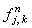

|
1.2. Исследование устойчивости.
Исследуем устойчивость явной разностной схемы (8.2), аппроксимирующей
дифференциальное уравнение (8.1), с помощью спектрального метода. Для этого отбрасываем член ,
наличие которого, как известно, не оказывает влияния на устойчивость разностной схемы, и представляем
решение в виде гармоники:
Упрощаем данное выражение, деля левую и правую его части на ,
и выражаем  :
Напомним, что если собственные числа оператора перехода имеют комплексный вид, то согласно
необходимому условию устойчивости разностных схем (3.8) требуется, чтобы они были расположены внутри
или на границе круга радиусом 1, центр которого находится в начале координат комплексной плоскости. :
Напомним, что если собственные числа оператора перехода имеют комплексный вид, то согласно
необходимому условию устойчивости разностных схем (3.8) требуется, чтобы они были расположены внутри
или на границе круга радиусом 1, центр которого находится в начале координат комплексной плоскости.
Введём следующие обозначения:
Данное выражение трудно анализировать, поскольку оно содержит две переменные величины -  и
и  . Рассмотрим наиболее простой случай, когда =:
Полученное выражение свидетельствует о том, что собственные числа оператора перехода расположены
на комплексной плоскости на окружности с центром в точке (1 - r; 0) и радиусом:
Сравнивая расположение этой окружности на комплексной плоскости с условием (3.8), получаем
три различных варианта (см. рисунок). Видно, что окружность, соответствующая собственным
числам оператора перехода, при r < 1 находится внутри круга, соответствующего условию (3.8);
при r > 1 - вне этого круга; а при r = 1 совпадает с его границей. Таким образом,
в случае =
явная разностная схема (8.2) будет устойчива при выполнении следующего условия:
Можно доказать, что выражение (8.6) также будет являться условием устойчивости явной разностной схемы . Рассмотрим наиболее простой случай, когда =:
Полученное выражение свидетельствует о том, что собственные числа оператора перехода расположены
на комплексной плоскости на окружности с центром в точке (1 - r; 0) и радиусом:
Сравнивая расположение этой окружности на комплексной плоскости с условием (3.8), получаем
три различных варианта (см. рисунок). Видно, что окружность, соответствующая собственным
числам оператора перехода, при r < 1 находится внутри круга, соответствующего условию (3.8);
при r > 1 - вне этого круга; а при r = 1 совпадает с его границей. Таким образом,
в случае =
явная разностная схема (8.2) будет устойчива при выполнении следующего условия:
Можно доказать, что выражение (8.6) также будет являться условием устойчивости явной разностной схемы
(8.2)
и в случае , однако в силу сложности это доказательство рассматривать не будем.
Исследование устойчивости разностных схем (8.3)-(8.5) проводится
по аналогичной методике и позволяет в итоге получить обобщённое условие устойчивости для всех
четырёх явных разностных схем (8.2)-(8.5), аппроксимирующих дифференциальное уравнение (8.1):
|